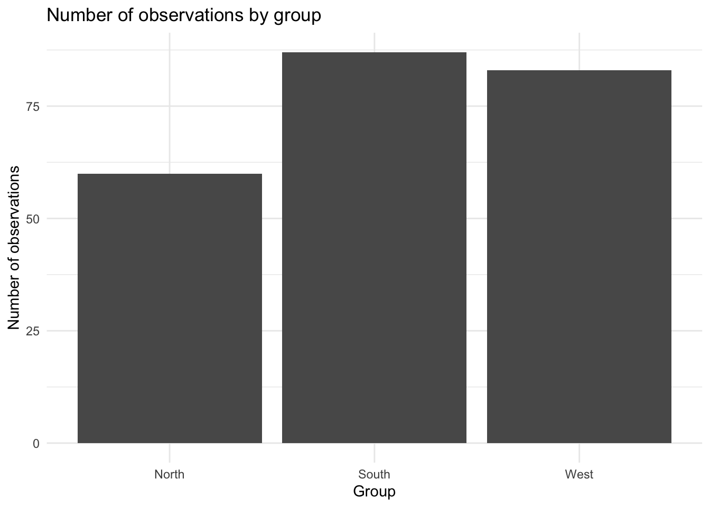

An important part of data analysis is to describe and visualize the data before building models. We call it Exploratory Data Analysis (EDA).
In this chapter, we separate EDA into two parts:
Univariate analysis — examining one variable at a time.
Bivariate analysis — examining the relationship between two variables.
Open the 5_EDA.qmd file located in the Quarto_files folder. As you work through this chapter in the course compendium, copy the code examples into your Quarto document and run them yourself. Try to understand what each line of code does, what changes it makes to the data, and why we might want to make that change. You will use many of these techniques again later in the course.
We start by clearing the Environment, loading the required packages, loading the course-specific EDA functions, and importing the cleaned dataset.
Take a first look at the data:
head(df_clean)
age income region price quantity revenue revenue_thousands age_cat
1 33 364171 South 502.524 14 7035.336 7.035336 Young
2 37 359677 South 266.101 8 2128.808 2.128808 Young
3 59 337375 North 455.708 3 1367.124 1.367124 Older
4 41 323698 South 286.847 17 4876.399 4.876399 Young
5 42 397541 North 390.907 13 5081.791 5.081791 Young
6 25 475438 West 474.551 5 2372.755 2.372755 Young
age_binary
1 0
2 0
3 1
4 0
5 0
6 0
You can inspect the structure and produce a general summary:
summary(df_clean)
age income region price
Min. :15.00 Min. :112827 Length:230 Min. : 62.33
1st Qu.:33.00 1st Qu.:381098 Class :character 1st Qu.:184.60
Median :40.00 Median :464277 Mode :character Median :318.33
Mean :40.71 Mean :456782 Mean :306.32
3rd Qu.:48.00 3rd Qu.:535281 3rd Qu.:424.28
Max. :79.00 Max. :758575 Max. :544.47
quantity revenue revenue_thousands age_cat
Min. : 1.00 Min. : 66.46 Min. : 0.06646 Length:230
1st Qu.: 5.00 1st Qu.: 1323.48 1st Qu.: 1.32348 Class :character
Median :10.00 Median : 2637.95 Median : 2.63795 Mode :character
Mean :10.22 Mean : 3160.78 Mean : 3.16078
3rd Qu.:15.00 3rd Qu.: 4668.89 3rd Qu.: 4.66889
Max. :20.00 Max. :10033.10 Max. :10.03310
age_binary
Min. :0.0000
1st Qu.:0.0000
Median :0.0000
Mean :0.2043
3rd Qu.:0.0000
Max. :1.0000
6.2 Univariate Descriptives
Univariate analysis means analyzing one variable at a time. Its important to remember that the type of variable we are working with determines which summary statistics, tables, and plots are appropriate.
For a numerical variable, we are usually interested in:
center,
spread,
shape,
and unusual observations.
For a categorical variable, we are usually interested in:
categories,
frequencies,
and proportions.
Lets go through some code that will do this for us.
6.2.1 Numerical variables
We begin with numerical variables such as age and income.
We can summarize and describe the main characteristics of numerical variables. The following R functions allow us to calculate common measures of center, spread, and range.
# Minimum value: min() returns the smallest value.min(df_clean$age)
[1] 15
# Maximum value: max() returns the largest value.max(df_clean$age)
[1] 79
# Range (minimum and maximum): range() returns both the minimum and maximum values.range(df_clean$age)
[1] 15 79
# Mean: mean() calculates the arithmetic mean (average).mean(df_clean$age)
[1] 40.7087
# Median: median() returns the middle value when the observations are ordered.median(df_clean$age)
[1] 40
# Standard deviation: sd() calculates the standard deviation, which describes how spread out the observations are around the mean.sd(df_clean$age)
[1] 11.478
# Variance: var() calculates the variance, another measure of spread.var(df_clean$age)
[1] 131.7445
# Quantiles: quantile() returns selected percentiles of the distribution, including the first quartile (25%), median (50%), and third quartile (75%).quantile(df_clean$age)
0% 25% 50% 75% 100%
15 33 40 48 79
We can also use summary() to obtain several important summary statistics at once:
summary(df_clean$age)
Min. 1st Qu. Median Mean 3rd Qu. Max.
15.00 33.00 40.00 40.71 48.00 79.00
6.2.1.1 Missing values
If a variable contains missing values (NA), many of these functions will return NA. We can tell R to ignore missing values by adding na.rm = TRUE:
mean(df_clean$age, na.rm =TRUE)
[1] 40.7087
sd(df_clean$age, na.rm =TRUE)
[1] 11.478
range(df_clean$age, na.rm =TRUE)
[1] 15 79
Here, na.rm = TRUE means remove the NAs before performing the calculation.
6.2.1.2 Histogram
A histogram shows the distribution of a numerical variable. The function we will use in this course requires four arguments: the variable name (including the data frame), the number of bins, the label for the x-axis, and the label for the y-axis.
Let’s try an example by looking at the distribution of age:
When interpreting a histogram, consider the following questions:
Where are most of the observations located?
Is the distribution symmetric or skewed?
Is there one clear peak or several peaks?
Are there any gaps in the distribution?
Are there any unusual or extreme observations?
6.2.1.3 Boxplot for one numerical variable
A boxplot summarizes the center, spread, and potential outliers of a numerical variable. In this course, we will use the following code to produce a simple boxplot for one variable.
The line inside the box represents the median. The box contains the middle 50% of the observations, from the first quartile (Q1) to the third quartile (Q3). The lines extending from the box are called whiskers, and observations beyond the whiskers are considered potential outliers.
The individual data points are also overlaid on the boxplot, allowing us to see the actual observations behind the summary.
When interpreting a boxplot, consider the following questions:
Where is the median located?
Where are the middle 50% of the observations?
How spread out are the observations?
Does the distribution appear symmetric or skewed?
Are there any potential outliers beyond the whiskers?
If comparing groups, how do their centers, spreads, and outliers differ?
6.2.2 Categorical variables
For categorical variables, we usually examine how observations are distributed across categories. We will use group as an example.
6.2.2.1 Frequency table
A frequency table shows the number of observations in each category.
table(df_clean$region)
North South West
60 87 83
6.2.2.2 Frequency table with percentages
We can also calculate percentages:
df_clean |>count(region) |>mutate(percent = n /sum(n) *100 )
region n percent
1 North 60 26.08696
2 South 87 37.82609
3 West 83 36.08696
This makes it easier to compare the relative size of the categories.
6.2.2.3 Bar chart
A bar chart provides a visual representation of category frequencies.
ggplot(df_clean, aes(x = region)) +geom_bar() +labs(title ="Number of observations by group",x ="Group",y ="Number of observations" ) +theme_minimal()

When interpreting a bar chart, ask:
Which category is most common?
Which category is least common?
Are observations distributed evenly across categories?
6.3 Bivariate analysis
Bivariate analysis means examining two variables at the same time. The appropriate method depends on the types of the two variables. Common combinations are:
numerical + numerical,
numerical + categorical,
categorical + categorical
6.3.1 Numerical + numerical
When both variables are numerical, we are often interested in whether they are related.
6.3.1.1 Scatterplot
A scatterplot shows the relationship between two numerical variables. For example, age and income:
Correlation measures the strength and direction of a linear relationship between two numerical variables. Correlation describes an association. It does not by itself establish direction (causation).
When both variables are categorical, we can use a cross table.
table(df_clean$age_cat, df_clean$region)
North South West
Older 13 18 16
Young 47 69 67
A more readable version can be created with:
df_clean |>count(age_cat, region)
age_cat region n
1 Older North 13
2 Older South 18
3 Older West 16
4 Young North 47
5 Young South 69
6 Young West 67
To examine percentages within each age category:
df_clean |>count(age_cat, region) |>group_by(age_cat) |>mutate(percent = n /sum(n) *100 )
# A tibble: 6 × 4
# Groups: age_cat [2]
age_cat region n percent
<chr> <chr> <int> <dbl>
1 Older North 13 27.7
2 Older South 18 38.3
3 Older West 16 34.0
4 Young North 47 25.7
5 Young South 69 37.7
6 Young West 67 36.6
When interpreting a cross table, ask whether the distribution across one categorical variable appears to differ across the categories of the other variable.
6.4 Choosing the appropriate method
A useful rule is to first identify the type of variable or variables you are working with.
Analysis
Variable type
Useful methods
Univariate
Numerical
Summary statistics, histogram, density plot, boxplot
Univariate
Categorical
Frequency table, percentages, bar chart
Bivariate
Numerical + numerical
Scatterplot, correlation
Bivariate
Numerical + categorical
Grouped histogram, grouped boxplot
Bivariate
Categorical + categorical
Cross table, percentages
6.5 A simple EDA workflow
A useful workflow is:
Identify the question
↓
Identify the variable type(s)
↓
Calculate appropriate summaries
↓
Create an appropriate visualization
↓
Describe the pattern
↓
Look for unusual observations
↓
Decide what to investigate next
EDA is not only about producing plots and tables. The goal is to use them to understand the data and identify patterns that matter for the business or research question.
6.6 Key takeaway
The key distinction is:
Univariate analysis = one variable at a time.
Bivariate analysis = two variables and the relationship between them.
Choose the summary statistic, table, or plot based on the type of variable you are analyzing.
The goal is not simply to create a figure or table. The goal is to use the figure or table to describe the data, identify patterns, and support further analysis.